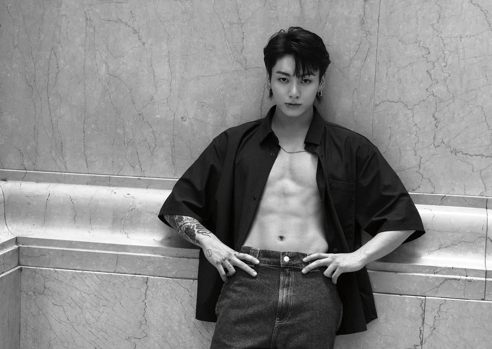
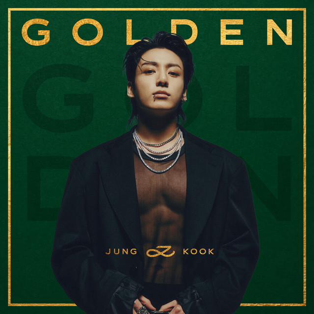

Jeon Jungkook
Jeon Jungkook

¿Quién es?
Jungkook nació el 1 de septiembre de 1997 en Busan. Es el miembro más joven de BTS, conocido como el “Golden Maknae” por su talento en múltiples áreas como canto, baile y producción. Actualmente se encuentra en sus finales de los 20 y es uno de los artistas más influyentes de su generación.
Su unión a BTS
Audicionó para un programa de talentos y, aunque no ganó, recibió ofertas de varias agencias. Finalmente eligió Big Hit Entertainment debido a la influencia de RM, lo que marcó el inicio de su carrera en BTS.
Trabajo solista
Canciones como “Seven” y “Euphoria” muestran su estilo versátil, abarcando pop, R&B y EDM con un enfoque global.
¡Escucha su música!
Descubre su potencial artístico en Golden, un álbum que refleja su evolución hacia el escenario internacional.
Conoce su música